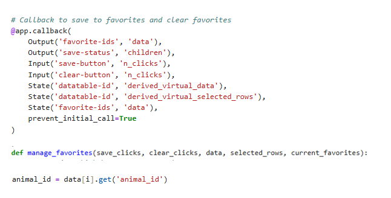
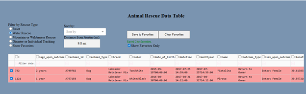
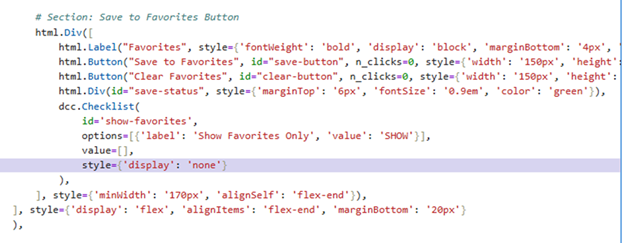
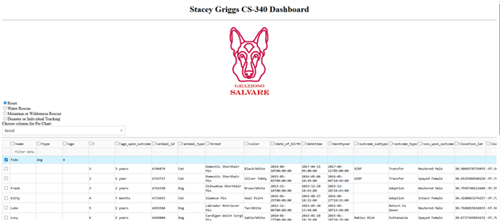
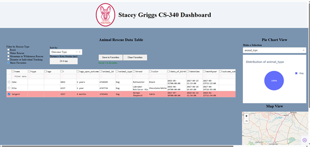

Artifact Description
The artifact I selected for my ePortfolio is a database-driven animal rescue dashboard application. This project was created in January 2025 as part of my course work in CS 340: Client Server Development. The dashboard connects to a MongoDB database that contains records of rescued animals and allows users to filter, sort, and now save favorite animal records. The interface includes a data table, pie charts, and a map view for visualizing animal rescue data.
Justification for Inclusion in ePortfolio
I chose this artifact because it shows my skills working with databases, data filtering, and user interface integration. This project gave me experience querying data with MongoDB, which is a NoSQL database, manipulating that data using Python and Pandas, and dynamically updating a web dashboard using Dash callbacks. The enhancements I made include implementing a favorites system where users can save and filter favorite records across multiple filter views. This feature highlights my ability to manage state and persist user data during a session. To work with my Save to Favorites button, I used Dash's State functionality to track user-selected favorite dog by their animal_id. Instead of reloading all the data and losing the user’s selections, the app kept track of those choices in the background. Knowing how to use State in a Dash app is important for business applications because it helps keep user choices and data consistent during interactions. It allows apps to respond to user inputs without losing important selections when filters or views change. This is especially useful in data dashboards where real-time filtering, sorting, or updates happen frequently.
Aritfact Enhancement
The artifact was improved by adding a filtering option that lets users view all their favorite dogs across different rescue types in one place. I also refactored how favorites are stored and managed to keep them consistent when filters change. These enhancements made it easier for users to quickly narrow down and find the specific dogs they were interested in.
Outcomes Achieved in the Milestone
Updated Callback:

I shifted gears from what I initially planned during Module One because I was not 100% sure how I wanted to
meet the milestone goals. Instead of updating the database queries, I added a feature that lets users mark
favorite dogs and filter to show only those favorites. Even though I didn’t follow my original plan, I still
showed my skills in data filtering, using Dash callbacks, and creating a better user experience.
Reflection on the Enhancement Process
This enhancement was the most challenging because there were many parts that I did not get to work right
the first time. It did help me understand how data flows between the database and the frontend. The biggest
challenge was making sure that user favorites still showed up correctly when different filters were used.
At first, I made a checkbox, but only the filtered radio selection showed up. I wanted all rescue filter
types to show up if they were saved to favorites. So, I added another radio selection to solve that problem
and hid the check box. This project helped me improve my debugging skills and gave me a better understanding
of how Dash callbacks work. I was also able to successfully implement a new filtering option that works with
the database and the app interface.
Radio Updates:


Code Comparison – Database Enhancement
Original Dashboard
Databases Enhancement

GitHub Repo: CS340 - Grazioso Salvare Dashboard
GitHub Repo: strong>CS499 - Computer Science Capstone